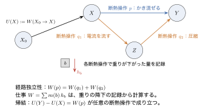

5 第一法則
系を平衡状態から平衡状態へ移す手順のうち、系の外に重りの高さの変化しか残さないものを断熱操作と呼ぶ (定義 44)。 図 4.1 の Joule の実験はその典型である。 断熱仕事の経路独立性は Joule の実験 [ 16 ] に基づく。 ここでの定式化は Lieb–Yngvason [ 1 , §2.4 ] に近い。
仕事は平衡状態の関数ではなく、断熱操作の関数である。 同じ \(X\) と \(Y\) を、かき混ぜて結ぶことも、電流を流して結ぶこともできる。 それらの仕事が等しいことが第一法則の経験的な内容 (経路独立性) である。 経路独立性が成り立つと、仕事は始状態と終状態だけで決まり、その差として平衡状態の関数 \(U : \Gamma \to \mathbb {R}\) (内部エネルギー) が定まる。 平衡状態の関数になるのは仕事 \(W\) ではなく内部エネルギー \(U\) である。

系の外にあって手順で使うもののうち、重り以外のものを装置という。
羽根車、ひも、滑車、発電機、ピストン、容器の壁などが装置である。
系を平衡状態 \(X\) から平衡状態 \(Y\) へ移す手順で、終わったとき次の二つが成り立つものを断熱操作という。
使った装置はすべて、始める前と同じ状態に戻っている。
系の外に残る変化は、重りの高さの変化だけである。
この定義は熱という語を使わない。 熱は後で、内部エネルギーを使って定義する (定義 58)。 断熱壁は、二つ目の条件を満たす手段の一つにすぎない。
Joule の実験 (図 4.1) は断熱操作である。 羽根車とひもは元の状態に戻り、変化は重りの高さだけに残る。 重りで回した発電機の電流を系の中の抵抗に流す手順や、重りで押したピストンで気体を圧縮する手順も断熱操作である。 バーナーで温める手順は断熱操作ではない。燃料が減り、バーナーが元の状態に戻らないからである。
\(X\) から \(Y\) へ移す断熱操作の集まりを \(\mathrm{Operation}(X, Y)\) と書く。 断熱操作 \(p\) の間の降下の記録を \(\mathrm{drops}(p)\) と書く。
断熱操作は続けて行え、その降下の記録はそれぞれの記録をつなげたものである。
\(X\) から \(Y\) への断熱操作が存在するとき、\(X \prec Y\) と書き、\(Y\) は \(X\) から断熱到達可能という。
任意の二つの平衡状態 \(X, Y\) で、\(X \prec Y\) または \(Y \prec X\)。
断熱到達性は、状態を断熱操作で比べる手順である。 この章では内部エネルギーを作るために使い、次の章ではエントロピーという目盛りを作るために使う。
重みづけ \(m\) を選ぶと、断熱操作 \(p\) の仕事を \(W_m(p) := \Sigma _m(\mathrm{drops}(p))\) と定める。
重力加速度は使わない。 \(m\) が天秤の質量なら、\(W_m(p)\) に \(g\) を掛けたものが、重りに重力がした仕事 (定理 38) である。 \(W_m\) は断熱操作の上の関数であり、\(\Gamma \) の上の関数ではない。 続けて行った断熱操作の仕事は、それぞれの仕事の和である。
以下、仕事の計算に使う重みづけ \(m\) は、力学の法則 (定義 39) を満たす正のものに限る。 天秤の質量目盛りがその代表である。 定理 42 から、そうした重みづけは互いに定数倍しか違わない。
同じ始状態と終状態を結ぶ二つの断熱操作 \(p, q \in \mathrm{Operation}(X, Y)\) で \(W_m(p) = W_m(q)\)。
力学の法則を満たす正の重みづけ \(m, m'\) の一方で経路独立性が成り立てば、他方でも成り立つ。
定理 42 から \(m' = c\, m\) (\(c {\gt} 0\)) なので \(W_{m'} = c\, W_m\)。
経路独立性が成り立つ重みづけを一つ固定すると、以下の議論に必要なのは各断熱操作の仕事 \(W(p)\) だけになる。 そこで、断熱操作の集まりと仕事 \(W\) の組で、仕事の加法性、経路独立性、連結性を満たすものを考える。 定義 45 の断熱操作から、経路独立な重みづけを選んでこの組が作れる。
\(p : X \to X\) なら \(W(p) = 0\)。
経路独立性から \(W(p) = W(p \circ p) = 2 W(p)\)。
基準状態 \(X_0\) を固定する。 \(X_0 \to X\) の断熱操作 \(p\) があれば \(U(X) := W(p)\)、なければ \(X \to X_0\) の断熱操作 \(q\) をとって \(U(X) := -W(q)\) とする。
任意の断熱操作 \(p : X \to Y\) について \(U(Y) - U(X) = W(p)\)。
\(X_0\) と \(X\)、\(X_0\) と \(Y\) をそれぞれどちら向きに結ぶかで四通りに分け、合成と経路独立性を使う。 \(X_0 \to X \to Y \to X_0\) の場合は閉じた断熱操作の補題を使う。
断熱仕事を再現する状態関数は、定数の差を除いて一意である。
連結性により任意の \(X\) は \(X_0\) と一方向に結べるので、差 \(U' - U\) は定数になる。
力学の法則を満たす正の重みづけ \(m, m' = c\, m\) から作った内部エネルギーは、\(U' = c\, U + d\) の関係にある。 違いは単位と基準点の選び方だけである。
\(c\, U\) は \(W_{m'}\) を再現するので、一意性の定理を適用する。
仕事 \(W\) を伴う、断熱とは限らない手順 \(X \to Y\) で入った熱を \(Q := U(Y) - U(X) - W\) と定義する。 第一法則 \(\Delta U = Q + W\) は定義から従う。
断熱操作で系に入る熱は \(0\) である。
内部エネルギーの存在定理を代入する。